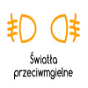

| Rodzaj świateł | Gdzie się znajdują | Jak włączyć | Kontrolka na desce rozdzielczej |
| Pozycyjne | Tył i przód | Przekręcić manetkę raz do góry | |
| Mijania (krótkie) | Przód | Przekręcić manetkę dwa razy do góry | |
| Drogowe (długie) | Przód | Przekręcić manetkę dwa razy do góry i odepchnąć ją od siebie | |
| Hamowania (stop) | Tył | Przytrzymanie hamulca | Brak ikony |
| Przeciwmgłowe | Tył (lewe dolne) | Przekręcić manetkę dwa razy do góry i pstryczek w dół |  |
| Cofania | Tył (prawe tylnie) | Wrzucenie biegu wstecznego | Brak ikony |
| Kierunkowskaz | Przód, tył i lusterka | Lewa wajcha w dół lub w górę | |
| Awaryjne | Przód, tył i lusterka | Czerwony trójkąt na desce | |